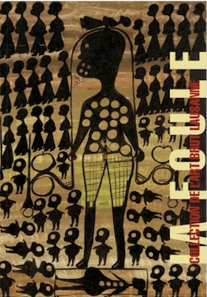
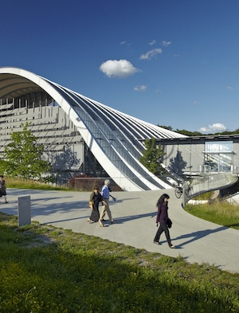
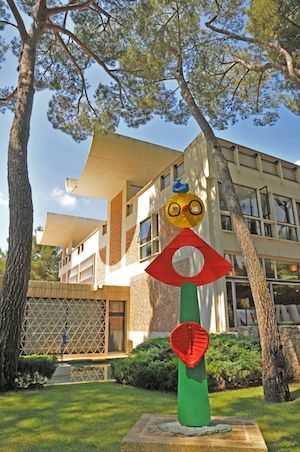

Après une enfance passée en Russie et en Suisse, je me suis lancée dans l'aventure entrepreneuriale dont je retire tous les jours des enseignements sur la nature humaine, mes limites et la résilience. Ce qui me motive dans l'économie actuelle ce sont les nouveaux modes d'organisation sociale et l'impact sur la cognition humaine. Je suis également passionnée par l'art et la littérature.
|  |
Fondation de l'art brut à LausanneUn lieu où je suis retournée des dizaines de fois, l'art en dehors de toute convention, une collection initiée par Dubuffet |
|  |
Paul Klee Zentrum à BerneUn peintre suisse qui n'a pas cessé de travailler, il produisait jusqu'à trois dessins par jour. J'admire sa ténacité et l'aspect ludique de ses oeuvres. |
|  |
Fondation Maeght à Saint-Paul-de-VenceLa famille Maeght a hébergé des artistes menacés pendant la guerre. Leur collection réunit des oeuvres de plusieurs de mes artistes favoris: Chagall, Miro, Giacometti. |